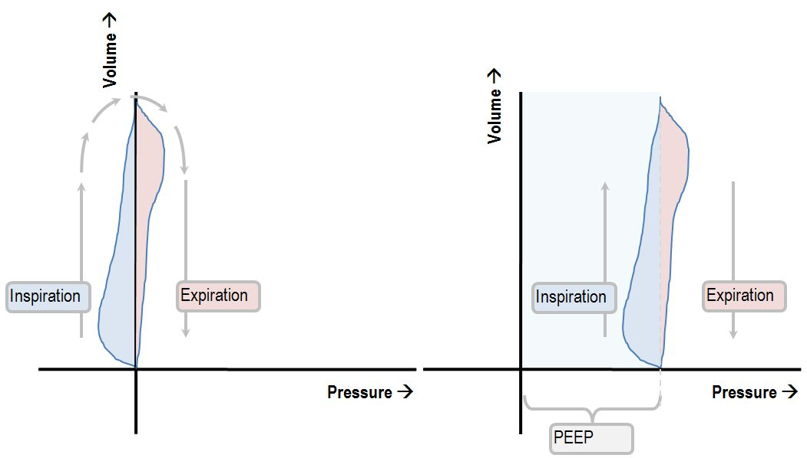
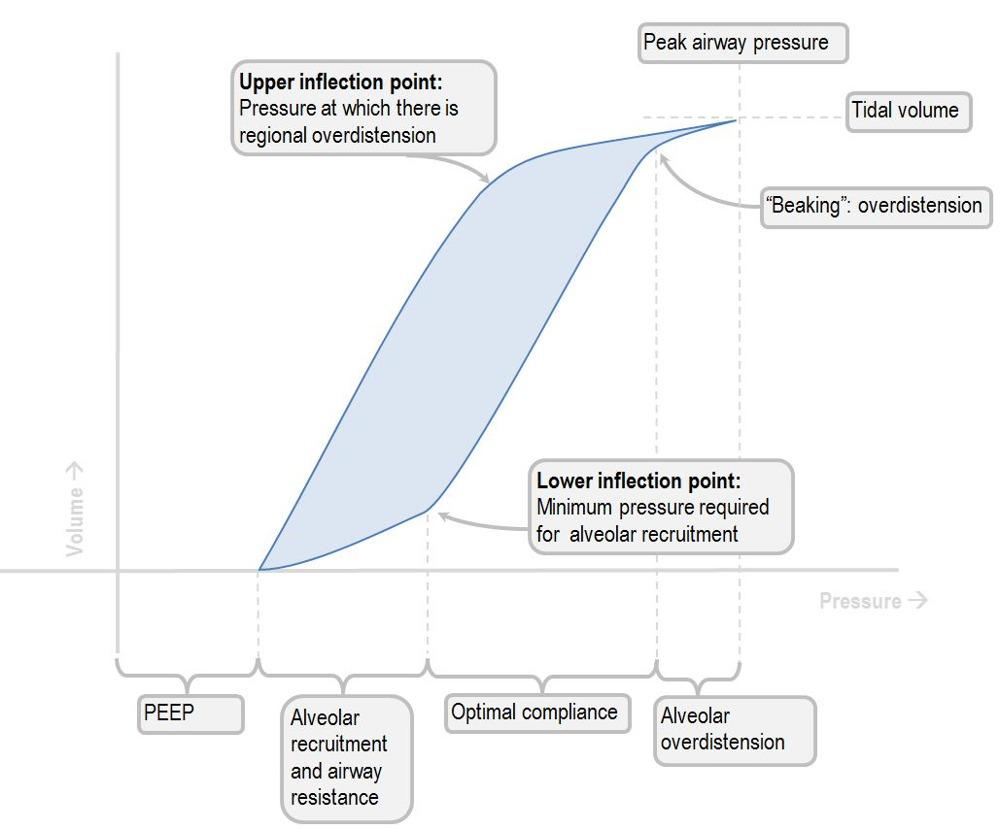
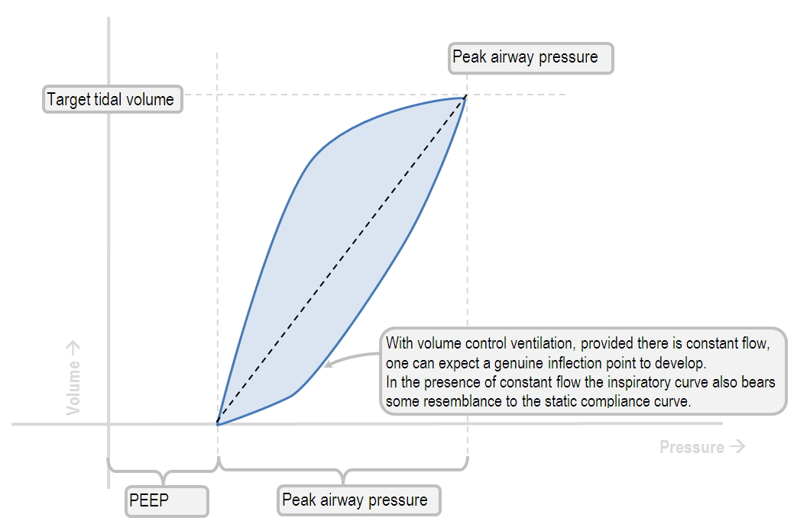
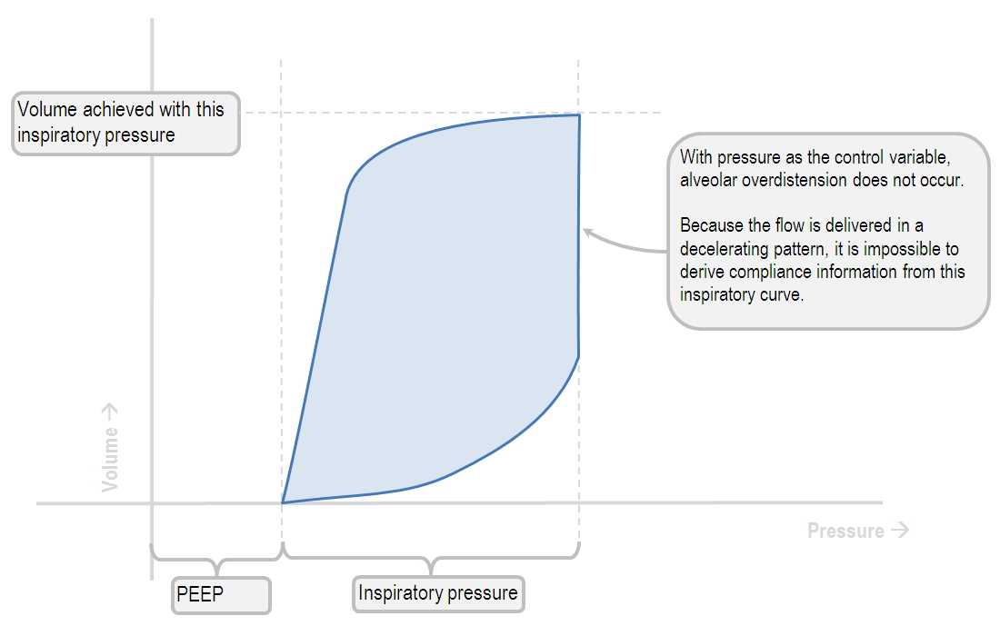
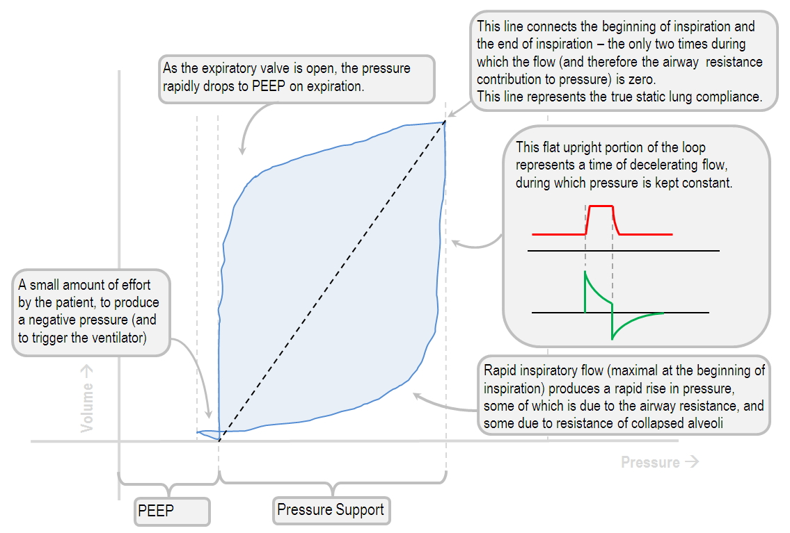
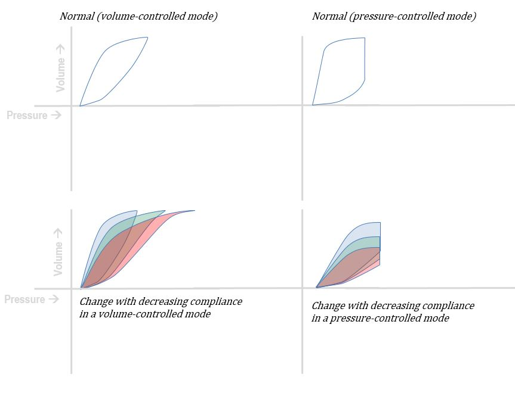
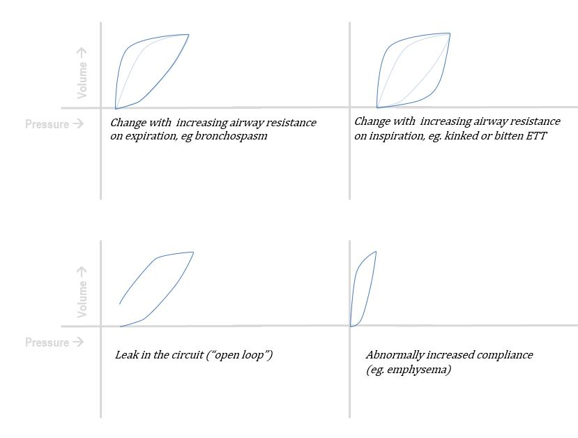
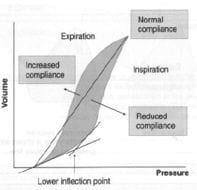
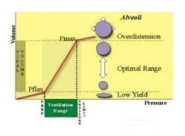

PV loops reveal lung compliance (slope), overdistension (beaking at UIP), atelectasis (LIP), and work of breathing (loop area). Traced counterclockwise.

PV Loop — Spontaneous Breathing
PV loop in a spontaneously breathing patient. Note the work of breathing is represented by the leftward deflection below the trigger point (patient effort).
Deranged Physiology

Anatomy of the PV Loop
Labeled components: inspiratory limb, expiratory limb, compliance slope, hysteresis area, lower inflection point (LIP), upper inflection point (UIP/beaking).
Deranged Physiology

Normal PV Loop — Volume Control (CMV/ACVC)
Ideal PV loop in volume-controlled ventilation. Note the characteristic shape — pressure rises as volume is delivered, forming a closed loop with normal hysteresis.
Deranged Physiology

Normal PV Loop — Pressure Control (PCV/ACPC)
PV loop in pressure-controlled ventilation. The pressure rises rapidly to the set level, then volume fills in — different shape from volume control.
Deranged Physiology

PV Loop — SIMV / PRVC
PV loop appearance in SIMV and PRVC modes. Note how PRVC loops may vary breath-to-breath as the ventilator auto-adjusts pressure to achieve target tidal volume.
Deranged Physiology

PV Loops Summary — Key Patterns
Summary diagram comparing normal PV loop against abnormal patterns. Quick reference for compliance changes, overdistension (beaking), and air trapping (loop not closing).
Deranged Physiology

PV Loops in Disease States
PV loop changes across pathologic states: decreased compliance (ARDS, pulmonary edema), increased resistance (bronchospasm), air trapping. Loops shift right and widen with disease.
Deranged Physiology

PV Loop — LITFL Diagram (Part 1)
LITFL's labeled PV loop showing normal loop anatomy, compliance slope, and key inflection points.
LITFL

PV Loop — LITFL Diagram (Part 2)
LITFL's PV loop showing abnormal patterns — beaking (overdistension), decreased compliance, and clinical interpretation pearls.
LITFL